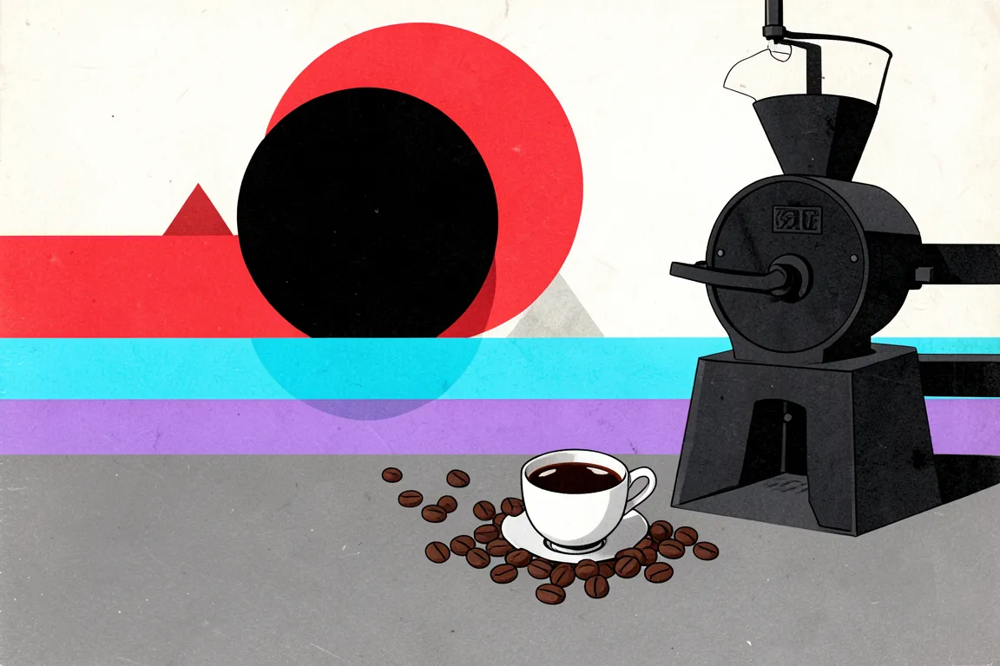

graphic movement · 1951–1980s · also: Nihon Modern Graphic Design, JAAC Modernism, Tokyo Olympic Graphics
Flat geometric forms in red and black, symbolic circles and triangles, soft colour bands, and dense kanji and katakana set against Latin type. It grew from the Japan Advertising Artists Club of 1951 and the Tokyo 1964 Olympic posters.

Core thesis
A single symbolic form on a quiet grid carries the whole message, and Japanese and Latin letters share the page as equal graphic material.
Design principles
Build each poster on one primary geometric form, such as a circle, a triangle or a stripe, that fills 40 to 70% of the sheet.
Use red (#D7261E) and black as the base pair, with white paper at 40% or more of the surface.
Add one gradient colour band of 3 to 7 stepped bands, fading from cyan to violet, only when the brief asks for the 1980s register.
Set Japanese text in vertical or horizontal blocks of 6 to 14 characters per line, with Latin type at 1/2 to 1/3 of the size beside it.
Align type blocks to a 12-column grid, then break the grid once with the symbolic form.
Reduce photography to high-contrast black and white or to flat colour silhouettes with no mid-tone.
Leave 20 to 30% of the sheet as quiet paper, so that the form has a margin (ma) around it.
Make a visual pun or a symmetrical, mirrored form when the idea allows it: one shape read in two ways.
Anti-patterns
Cherry blossom, fan and temple clip art used as a Japanese signal
Brush-script or fake calligraphic fonts for katakana and Latin type
Centred, symmetric layouts with equal weight in every corner
Soft shadows, glass and glossy bevels
A smooth gradient across the full sheet in place of stepped colour bands
More than 3 type sizes in one block, or mixed Gothic and Mincho in one line
Western Swiss grids copied without a symbolic form to break them